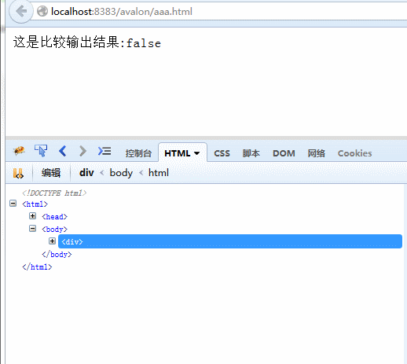
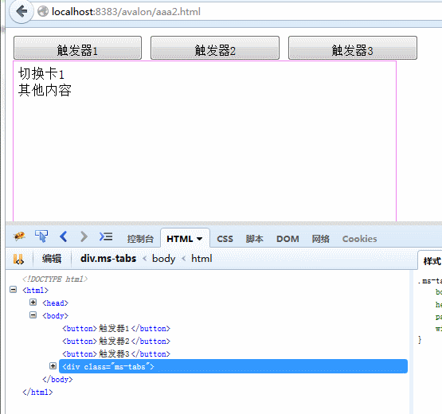

插入移除处理(ms-if)
ms-if与ms-each,ms-with,ms-repeat归类为流程绑定，如果表达式为真值那么就将当前元素输出页面，不是就将它移离原位置。 它的效果与上一章节的ms-visible效果看起来相似的， 但它会影响到:empty伪类，并能更节约性能。ms-if还有一个分支，叫ms-if-loop，它是配合ms-repeat绑定使用，见本文末尾。
我们可以通过以下例子比较一下两者：
<!DOCTYPE HTML>
<html>
<head>
<title>ms-if</title>
<meta http-equiv="Content-Type" content="text/html; charset=UTF-8">
<script src="avalon.js"></script>
<script>
var vmodel = avalon.define({
$id: "test",
object: {}
})
setTimeout(function() {
vmodel.object = {
id: "132",
message: "显示！！"
}
}, 3000)
setTimeout(function() {
vmodel.object = {}
}, 5000)
</script>
</head>
<body>
<div ms-controller="test">
这是比较输出结果:{{object.id != null}}
<div ms-visible="object.id != null">
这是visible的:
<span>{{object.message}}</span>
</div>
<div ms-if="object.id != null">
这是if的:
<span>{{object.message}}</span>
</div>
</div>
</body>
</html>
ms-if的实现比ms-visible复杂多了，并且不同时期的实现方式也不一样。在1.36之前，如果表达式为false，它就会立即停止扫描 （包括此元素其他绑定属性或它下面的子节点），将它放到一个叫ifSanctuary的DIV元素中，此元素是游离于DOM树之外的。 为了能在重新插入DOM时找到正确的位置，avalon还得创建一个注释节点做路标。当表达式再次变为true时，就会将原元素替换掉注释节点。 1.36后，avalon会在head标签内创建一个自定义的avalon标签，将ms-if要移除的元素放到它里面去。
//1.3.8的源码
bindingHandlers["if"] =
bindingHandlers.data =
bindingHandlers.text =
bindingHandlers.html =
function(data, vmodels) {
parseExprProxy(data.value, vmodels, data)
}
bindingExecutors["if"] = function(val, elem, data) {
if (val) { //插回DOM树
if (elem.nodeType === 8) {
elem.parentNode.replaceChild(data.template, elem)
elem = data.element = data.template //这时可能为null
}
if (elem.getAttribute(data.name)) {
elem.removeAttribute(data.name)
scanAttr(elem, data.vmodels)
}
data.rollback = null
} else { //移出DOM树，并用注释节点占据原位置
if (elem.nodeType === 1) {
var node = data.element = DOC.createComment("ms-if")
elem.parentNode.replaceChild(node, elem)
data.template = elem //元素节点
ifGroup.appendChild(elem)
data.rollback = function() {
if (elem.parentNode === ifGroup) {
ifGroup.removeChild(elem)
}
}
}
}
}由于ms-if拥有能够中止扫描的特性，我们可以配合ms-include实现延迟加载与扫描，大大提高页面的性能。
最后，我们还是用切换卡例子结束本章吧。
<!DOCTYPE html>
<html>
<head>
<title>TODO supply a title</title>
<meta charset="UTF-8">
<meta name="viewport" content="width=device-width">
<script src="avalon.js"></script>
<script>
var model = avalon.define({
$id: "test",
currentIndex: 0,
toggle: function(index) {
model.currentIndex = index
}
})
</script>
<style>
button {
width: 150px;
height: 30px;
line-height: 30px;
text-align: center;
}
.ms-tabs {
border: 1px solid violet;
width: 430px;
padding: 5px;
height: 200px;
}
</style>
</head>
<body ms-controller="test">
<button ms-click="toggle(0)">触发器1</button>
<button ms-click="toggle(1)">触发器2</button>
<button ms-click="toggle(2)">触发器3</button>
<div class="ms-tabs" ms-if="currentIndex === 0">切换卡1
<br/>其他内容</div>
<div class="ms-tabs" ms-if="currentIndex === 1">切换卡2
<br/>及司徒正美</div>
<div class="ms-tabs" ms-if="currentIndex === 2">切换卡3
<br/>最后一个了</div>
</body>
</html>
在一个元素中, ms-if与ms-repeat是可以同时存在于某一元素, 但ms-if优先级比ms-repeat高;
如果ms-if的表达式为false,那么就会导致所有东西循环不出来.当我们只想循环出数组或对象的某一部分符合元素的项时,
我们需要一个优先及比ms-if,ms-repeat都低的特殊绑定,这时ms-if-loop就被发明出来了.它要来它必须与ms-repeat位于同一元素上.
用法与ms-if相同.